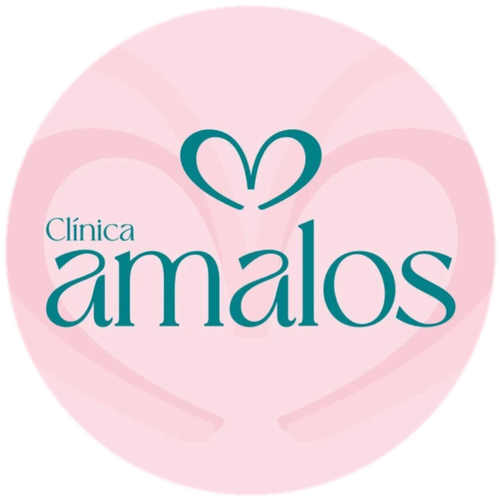

Clínica Amalos
Saúde Integrativa e Odontológica, Euclides da Cunha, BA
A Clínica Amalos, referência em saúde integrativa e odontológica na região, não tinha uma presença digital à altura do trabalho que faz. Sem site, o primeiro contato de um paciente novo dependia só de indicação, e quem procurava a clínica no Google simplesmente não encontrava nada de confiável pra decidir se agendava uma consulta ali.
SoluçãoDesenvolvemos um site institucional completo, com identidade visual própria, apresentação da equipe, especialidades e depoimentos reais, e cuidamos da estratégia pra aparecer melhor no Google, incluindo o perfil da clínica e diretórios de saúde da região.
O que fizemos
Identidade visual própria
Uma paleta e um logo que combinam com o jeito de cuidar da clínica, aplicados em todo o site.
Por quê? Um visual genérico não passa a sensação de cuidado que a Amalos oferece de verdade no atendimento presencial.
Site completo, do jeito certo
Apresentação da clínica, mais de 10 especialidades, a equipe completa com foto e bio de cada profissional, depoimentos reais de pacientes, galeria do espaço e localização.
Por quê? Paciente novo pesquisa antes de agendar, e quanto mais ele encontra sobre a equipe e a estrutura, mais confiança tem pra marcar a consulta.
Fácil de navegar e contatar
Navegação suave entre as seções e botão de WhatsApp em destaque, facilitando o primeiro contato de novos pacientes.
Por quê? Se o contato não é imediato e óbvio, o visitante desiste e procura outra clínica na próxima aba aberta.
Presença no Google
Site preparado pra aparecer nas buscas
Ajustamos o site tecnicamente pra ser bem indexado pelo Google, com as palavras-chave certas pra atrair pacientes da região.
Por quê? Ter um site bonito não adianta se ele não aparece quando o paciente procura no Google, de onde vem a maior parte do tráfego.
Perfil no Google organizado
Revisamos o perfil da clínica no Google, garantindo que endereço, horários e categorias estão corretos.
Por quê? Um perfil desatualizado ou com informação errada faz o paciente desconfiar antes mesmo de entrar no site.
Presença em diretórios de saúde
Cadastro em plataformas como Doctoralia, aumentando a visibilidade da clínica pra quem procura um dentista na região.
Por quê? Muita gente pesquisa direto nesses diretórios antes mesmo de ir ao Google, e não estar lá é ficar fora dessa busca inteira.
O que também podemos oferecer
A Amalos já tem site e presença no Google. Esses seriam os próximos passos pra transformar mais visitas em pacientes agendados.
Atendimento automático
Recepcionista virtual com IA respondendo e agendando pelo WhatsApp 24h.
Gestão de redes sociais
Conteúdo e presença ativa no Instagram pra atrair e fidelizar pacientes.
Tráfego pago
Anúncios segmentados pra região, atraindo pacientes prontos pra agendar.
Quer um case parecido com esse pro seu negócio?
Sem compromisso, sem pressão. É só bater um papo pra entender onde a tecnologia pode ajudar você.
Falar no WhatsApp